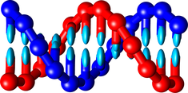

hairygami_umbrella_sampling 
Table of Contents
Introduction
oxdna simulation module
umbrella sampling module
hairygami_umbrella_sampling
Index
Index
A
|
B
|
C
|
D
|
F
|
G
|
H
|
I
|
K
|
M
|
O
|
P
|
Q
|
R
|
S
|
U
|
V
|
W
A
add_force() (oxdna_simulation.Simulation method)
add_force_file() (oxdna_simulation.Simulation method)
add_observable() (oxdna_simulation.Simulation method)
add_protein_par() (oxdna_simulation.Simulation method)
align() (oxdna_simulation.OxdnaAnalysisTools method)
Analysis (class in oxdna_simulation)
angle() (oxdna_simulation.OxdnaAnalysisTools method)
B
BaseUmbrellaSampling (class in umbrella_sampling)
build() (oxdna_simulation.Simulation method)
build_equlibration_runs() (umbrella_sampling.ComUmbrellaSampling method)
build_production_runs() (umbrella_sampling.ComUmbrellaSampling method)
C
centroid() (oxdna_simulation.OxdnaAnalysisTools method)
chunk_convergence_analysis() (umbrella_sampling.WhamAnalysis method)
com_distance() (oxdna_simulation.OxdnaAnalysisTools method)
com_force() (oxdna_simulation.Force static method)
ComUmbrellaSampling (class in umbrella_sampling)
concat_all_system_traj() (oxdna_simulation.GenerateReplicas method)
conformational_entropy() (oxdna_simulation.OxdnaAnalysisTools method)
convergence_analysis() (umbrella_sampling.WhamAnalysis method)
current_step() (oxdna_simulation.Analysis method)
D
data_truncated_convergence_analysis() (umbrella_sampling.WhamAnalysis method)
decimate() (oxdna_simulation.OxdnaAnalysisTools method)
determine_cv_sign() (oxdna_simulation.OxdnaAnalysisTools method)
deviations() (oxdna_simulation.OxdnaAnalysisTools method)
distance() (oxdna_simulation.Observable static method)
F
Force (class in oxdna_simulation)
force_energy() (oxdna_simulation.Observable static method)
G
GenerateReplicas (class in oxdna_simulation)
get_conf() (oxdna_simulation.Analysis method)
get_conf_count() (oxdna_simulation.Analysis method)
get_init_conf() (oxdna_simulation.Analysis method)
get_last_conf() (oxdna_simulation.Analysis method)
H
harmonic_trap() (oxdna_simulation.Force static method)
hb_list() (oxdna_simulation.Observable static method)
I
input_file() (oxdna_simulation.Simulation method)
K
kinetic_energy() (oxdna_simulation.Observable static method)
M
make_sequence_dependant() (oxdna_simulation.Simulation method)
mean() (oxdna_simulation.OxdnaAnalysisTools method)
minify() (oxdna_simulation.OxdnaAnalysisTools method)
morse() (oxdna_simulation.Force static method)
multisystem_replica() (oxdna_simulation.GenerateReplicas method)
mutual_trap() (oxdna_simulation.Force static method)
O
Observable (class in oxdna_simulation)
oxDNA_PDB() (oxdna_simulation.OxdnaAnalysisTools method)
OxdnaAnalysisTools (class in oxdna_simulation)
P
particle_position() (oxdna_simulation.Observable static method)
pca() (oxdna_simulation.OxdnaAnalysisTools method)
plot_energy() (oxdna_simulation.Analysis method)
potential_energy() (oxdna_simulation.Observable static method)
Q
queue_sim() (oxdna_simulation.SimulationManager method)
R
radius_of_gyration() (oxdna_simulation.OxdnaAnalysisTools method)
rate_umbrella_forces() (umbrella_sampling.ComUmbrellaSampling method)
repulsion_plane() (oxdna_simulation.Force static method)
repulsion_sphere() (oxdna_simulation.Force static method)
rotating_harmonic_trap() (oxdna_simulation.Force static method)
run() (oxdna_simulation.SimulationManager method)
run_wham() (umbrella_sampling.WhamAnalysis method)
S
Simulation (class in oxdna_simulation)
SimulationManager (class in oxdna_simulation)
skew_force() (oxdna_simulation.Force static method)
start_nvidia_cuda_mps_control() (oxdna_simulation.SimulationManager method)
string() (oxdna_simulation.Force static method)
subset_trajectory() (oxdna_simulation.OxdnaAnalysisTools method)
U
umbrella_forces() (umbrella_sampling.ComUmbrellaSampling method)
V
view_conf() (oxdna_simulation.Analysis method)
view_init() (oxdna_simulation.Analysis method)
view_last() (oxdna_simulation.Analysis method)
W
wham_run() (umbrella_sampling.BaseUmbrellaSampling method)
WhamAnalysis (class in umbrella_sampling)
worker_manager() (oxdna_simulation.SimulationManager method)